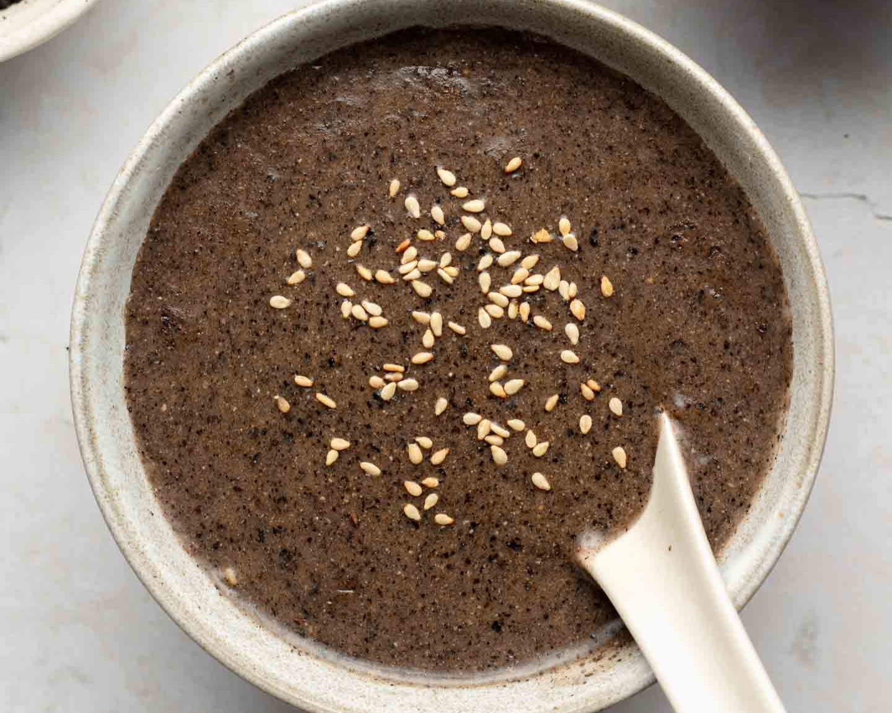

The smooth, velvety zhi ma hu or black sesame soup is a variety of Chinese tong sui (lit. sugar water), a dessert soup commonly enjoyed for breakfast, after meals, or served for teatime accompanied by dim sum, the traditional Cantonese bite-sized tea snacks. Particularly popular in southern China and Hong Kong, this dessert boasts numerous health benefits, thanks to the extremely nutrient black sesame seeds which are rich in vitamin B, magnesium, calcium, manganese, and iron. Zhi ma hu is known to improve digestion, kidney function, prevent gallstones, and reduce blood fat.
Meal prep time : 30 minutes
Servings : 6